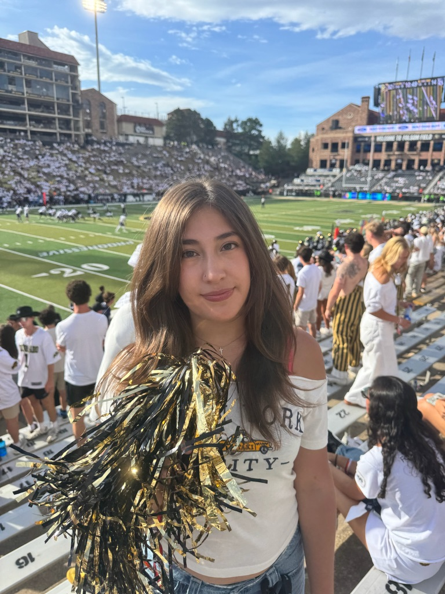
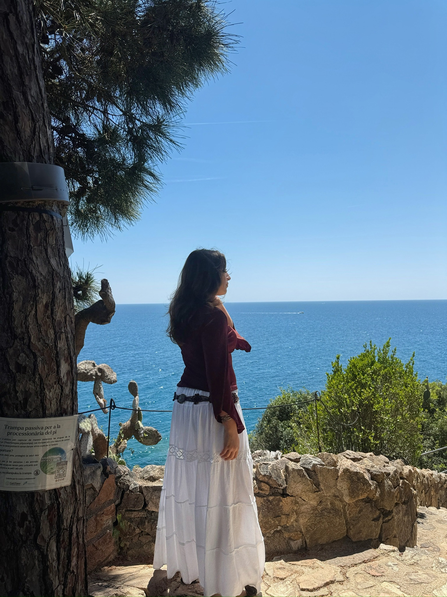
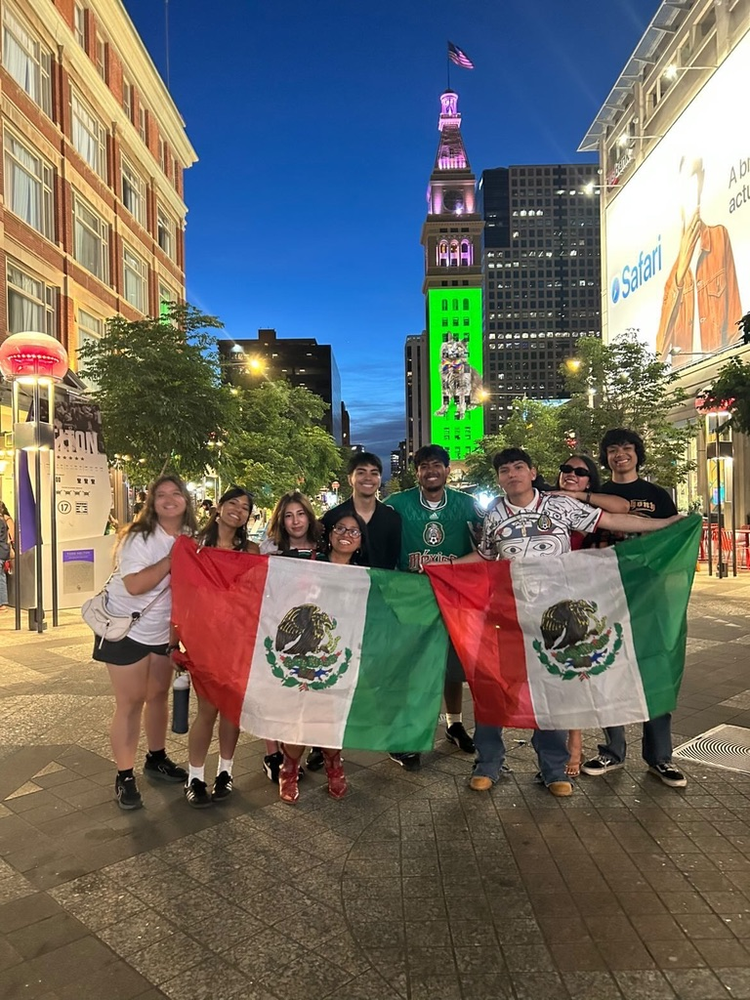
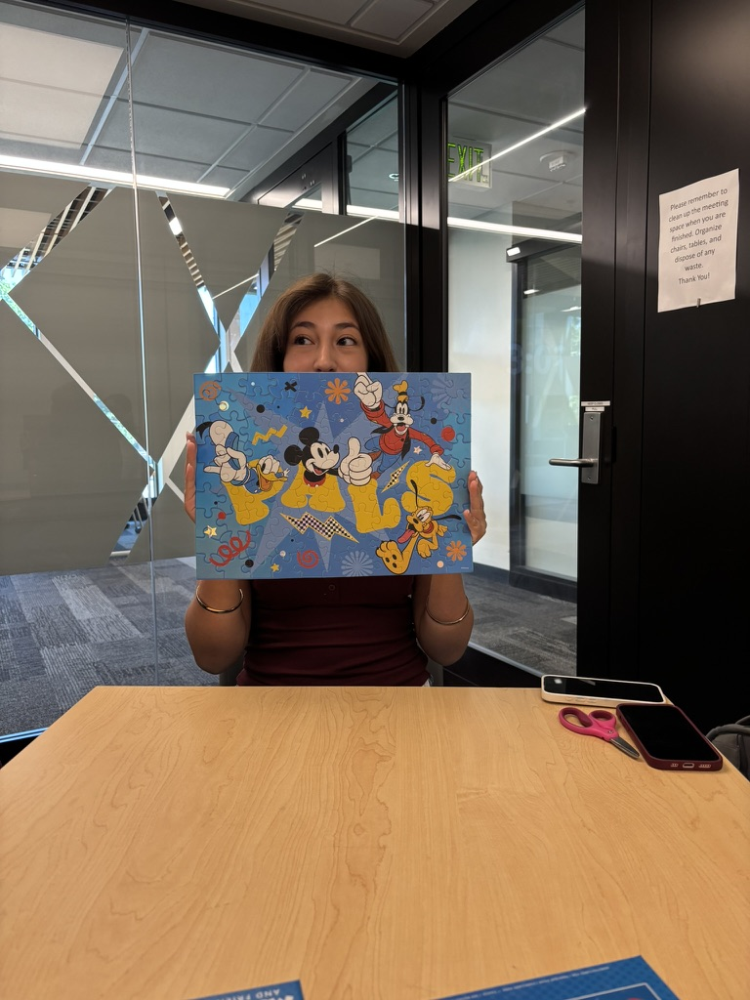

About Me




My name is Claudia, I'm currently majoring in Creative Technology and Design and pursuing a UX Certificate at the University of Colorado Boulder. I'm really interested in bridging the gap between technology and human interactions with things such as creativity, usability, and user-centered design. I enjoy understanding people's needs and using design to create digital experiences that are intuitive, accessible, and enjoyable to use.
Outside of school, I love traveling, spending time with friends, and meeting new people. I'm also really passionate about art, especially when it comes to drawing or music. I enjoy figuring out puzzles and solving problems, which is something I bring into both my personal interests and my approach to design. I'm always curious to learn something new, explore different perspectives, and find inspiration in the people and experiences around me.